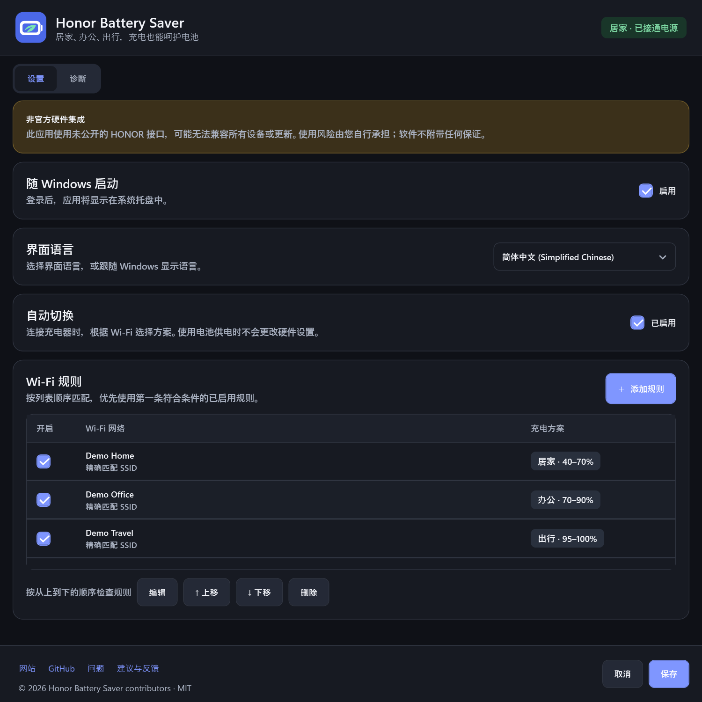
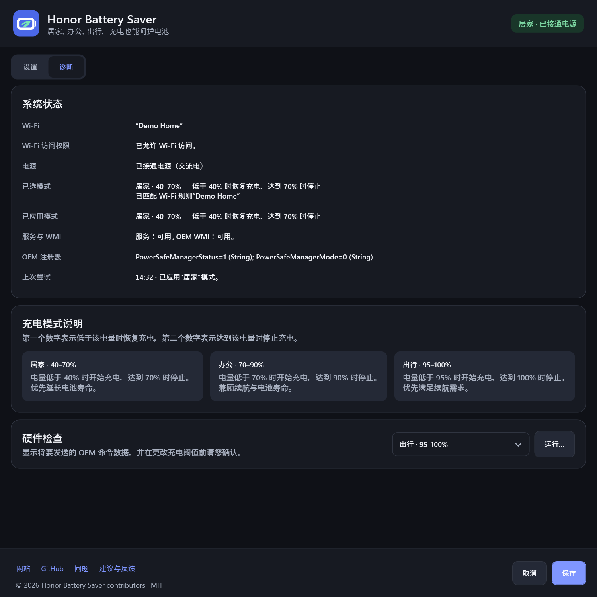

70%
居家
随时可以接通电源时，减少电池长期处于高电量状态的时间。
40%70%
0%100%
附近有插座时，Honor Battery Saver 会降低充电上限；出行前则恢复至 100%。无需手动切换方案，即可减少电池长时间处于满电状态的情况。
v1.0.0 · 预发布版 · 安装程序目前尚未进行数字签名 验证 SHA-256
出行前充满电很实用，但在桌前办公时，往往不必一直保持满电。Honor Battery Saver 会自动将电量保持在有助于保护电池的范围内，需要更长续航时，再允许充至 100%。
每种充电方案都兼顾电池寿命与续航需求。连接已设置规则的 Wi-Fi 网络后，应用会自动启用对应方案。
随时可以接通电源时，减少电池长期处于高电量状态的时间。
呵护电池的同时，为会议保留充足续航。
仅在真正需要时才允许充满电。
连接电源、切换 Wi-Fi、启动系统或从睡眠中唤醒时，应用都会检查充电方案。您无需记住充电上限，也不必手动调整。
为家庭和办公网络分配合适的方案。
接通电源后，应用会检查第一条匹配的规则。
本地服务会设置更有利于电池寿命的充电上限，您可以在诊断页面确认是否生效。
以下为应用在深色模式下的实际界面。网络名称和诊断数值均为演示数据，并非您设备的检测结果。

在同一个窗口中管理 Wi-Fi 规则、方案自动切换、界面语言和开机启动设置。
查看原图
供电方式、所选方案、服务状态，以及充电上限是否生效，一目了然。
查看原图应用使用未公开的 HONOR OEM 接口。更新 BIOS、驱动程序或 PC Manager 后，其行为可能改变。
启用自动切换前，请先运行硬件诊断并阅读免责声明。
阅读免责声明在家或办公室，让 Honor Battery Saver 自动降低充电上限，呵护电池；需要更长续航时，再恢复至 100%。
免费下载 Windows 版 免费 · 开源 · MIT